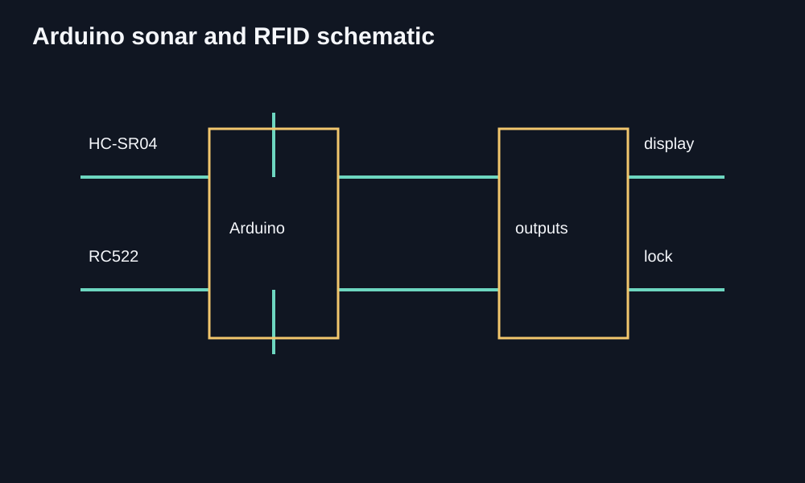
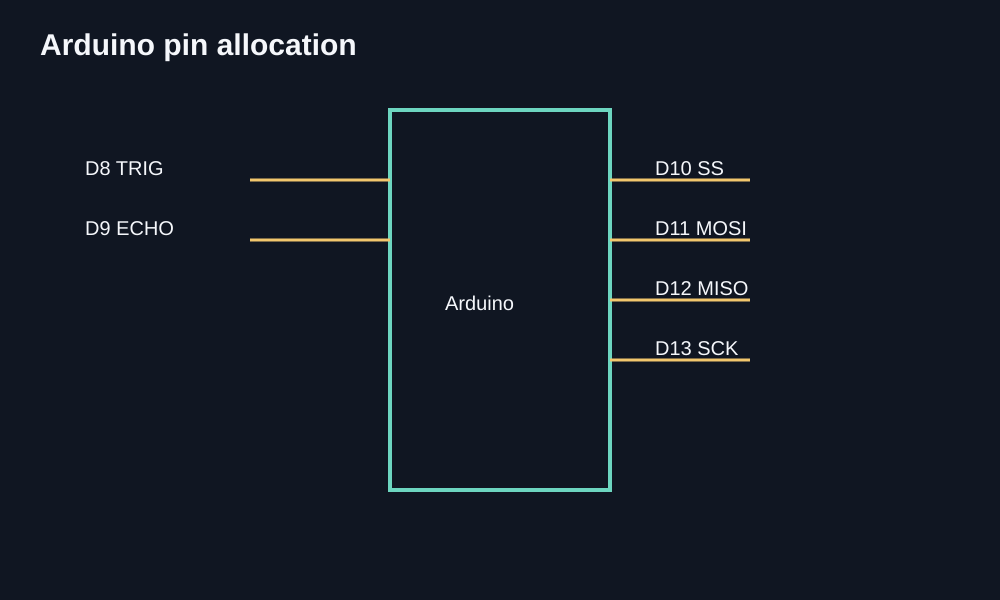
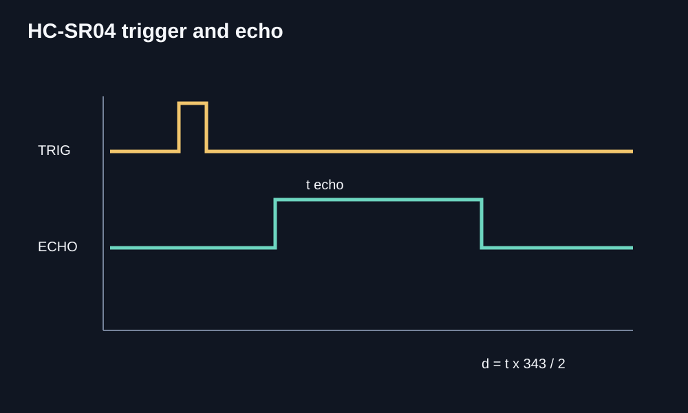
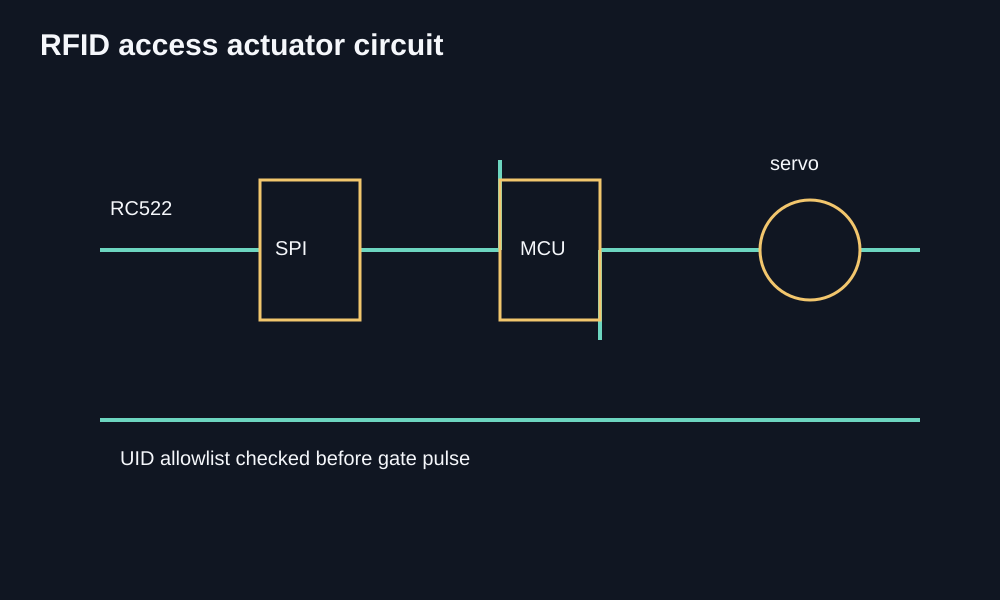

Ultrasound Sonar & RFID Access
An Arduino ultrasound sonar project paired with an RFID access control setup.
Technical diagrams of the Arduino, ultrasonic timing, RFID and access-control signal paths. They explain the design without presenting conceptual artwork as physical evidence.




Arduino sonar and RFID system schematic
Arduino pin allocation for sonar and RFID
HC-SR04 trigger and echo timing output
RFID access actuator circuit
About this project
I made an ultrasound sonar system with Arduino and connected it to an RFID access control setup. The project brought sensing and access control together in one build.
Working on both parts helped me practise connecting electronic modules and thinking through how they should work as a system.
What it does
- Ultrasound sonar built with Arduino
- RFID access and control
- Both parts working in one system